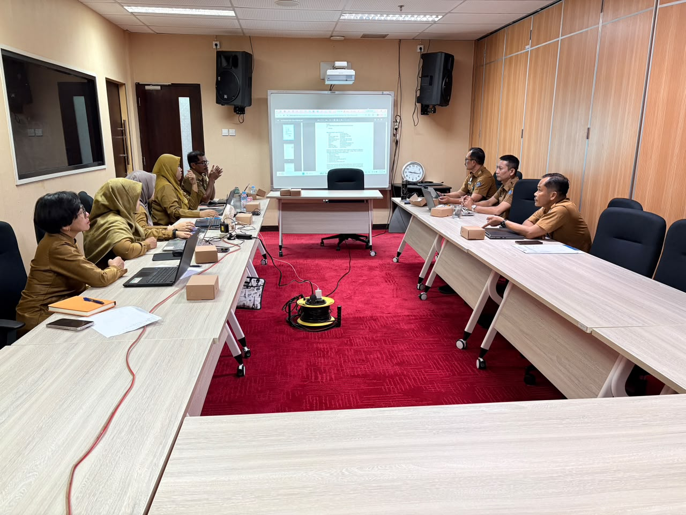

Pembinaan Tenaga Kependidikan Kota Bontang
Bidang Pembinaan Tenaga Kependidikan merupakan unsur pelaksana pada Dinas Pendidikan dan Kebudayaan Kota Bontang yang memiliki tugas melaksanakan pembinaan, pengembangan, dan peningkatan kompetensi tenaga kependidikan.
Bidang ini berperan dalam mendukung peningkatan mutu pendidikan melalui pengelolaan tenaga kependidikan yang profesional, kompeten, dan berintegritas.

Terwujudnya peningkatan kualitas sumber daya manusia, pemerataan layanan pendidikan, serta pelestarian dan pengembangan kebudayaan daerah secara berkelanjutan.